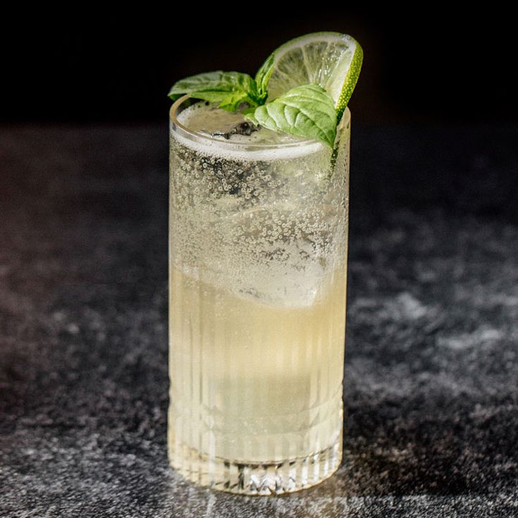

Tom Collins

Description
The secret to a Tom Collins is the glass. No, seriously. The tall Collins glass makes this tall frosty gin and lemon drink a
pleasure to look at, to watch be made, and to drink.
The clean, flavor is a crowd pleaser for men and women alike,
especially at the height of summer.
Ingredients
- 2 oz gin
- 1 oz fresh lemon juice
- 1 tsp sugar (or ½ oz simple syrup)
- Soda water to fill
Steps
- Add all ingredients beside the soda water to a shaker and shake vigorously
- Pour into a glass of ice
- Fill the rest of the glass with soda water
- Garnish with a slice of lemon and add a straw